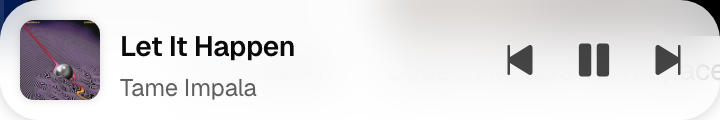
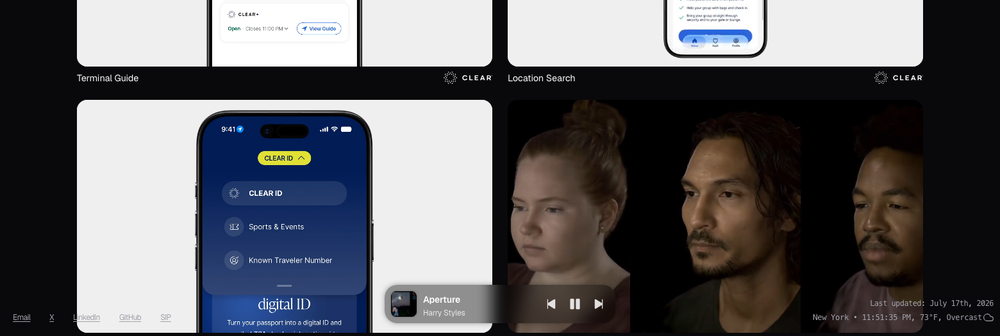
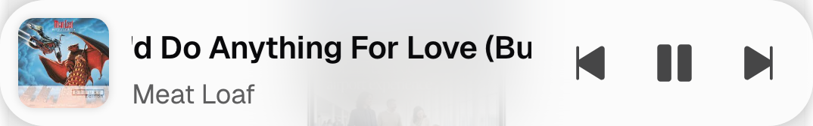
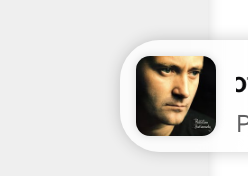
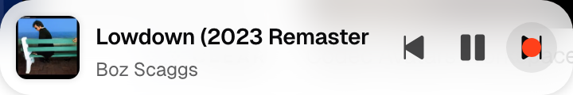
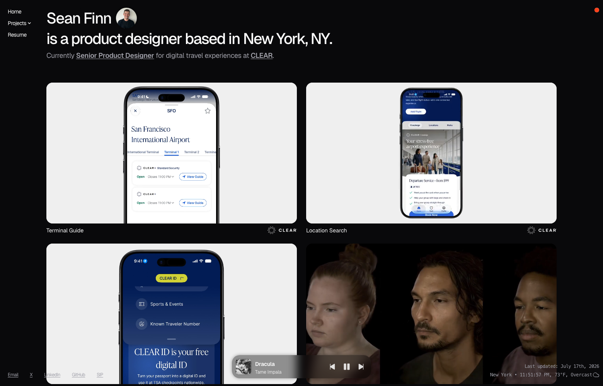

Music Bar
A persistent, site-wide mini player that follows visitors from page to page — connected to a real playlist, not a mock.
Every other case study on this site documents somebody else's product. Music Bar documents this one — a persistent mini player built directly into the portfolio, pinned to the screen on every page and connected to a real playlist.
A portfolio site is static by nature — visitors land, scroll, and leave. There was no ambient signal that the site was actually alive, and nothing for a visitor to directly interact with beyond reading and clicking through case studies.

The first working version — album art, title, artist, and a transport row, all in one compact bar.
I designed and built Music Bar myself, end to end, iterating directly against the live site rather than a static mock — every version got tested in a real browser, on real devices, before moving to the next decision.

Dark mode isn't an inverted color, it's a second pass — the bar reads its theme and blends in rather than fighting it.
The first version was a compact pill — album art, title, artist — that toggled play on tap. I added dedicated skip-back, play/pause, and skip-forward controls to match a proper transport bar, then reworked its width and position through several passes: paired with the footer, centered on the page, and finally locked to a fixed 360px width on desktop so it reads as its own element instead of stretching arbitrarily wide.

The same bar, everywhere — it's injected once from a shared script, so it shows up on every page without being copy-pasted into each one.
A visitor lands on any page and the bar is already there, pinned at the bottom, playing muted — every browser blocks autoplay with sound until the visitor interacts with the page, so it unmutes itself on their first tap or click. On mobile it goes further: after 10 seconds idle it slides most of the way off-screen, leaving the album art peeking in as a handle, and a swipe in either direction brings it back or parks it again — always the visitor's call, not a timer's.

Parked off-screen after 10 seconds idle, with just enough of the album art left showing to grab and swipe back.
The whole thing runs on YouTube's IFrame Player API with no API key, which meant designing around real limits: autoplay-with-sound is blocked everywhere without a prior gesture; there's no way to know a playlist's length before loading it once, which shapes how track randomization has to work; and swipe handling on mobile had to explicitly hand vertical scrolling back to the browser while claiming horizontal drags for itself, or dragging the bar would drag the whole page along with it.

Small details matter at this scale — a hover state on the transport controls, tuned to disappear cleanly on touch devices.
Before: every page was the same static experience regardless of how long a visitor stayed. After: a small, real, working feature that plays music, responds to taps and swipes, and quietly matches its own color scheme to light or dark mode instead of fighting it.

The finished bar on a dark-mode page — present, but never louder than the work it's sitting on top of.
Music Bar turned the portfolio itself into a small case study — not a mockup of a decision, but the decision, tested and shipped on the live site. It's a persistent, theme-aware, gesture-driven mini player that follows visitors across every page they visit.
Live and iterating. Next up: normalizing artist/title metadata for tracks that don't follow the "Artist – Title" convention, and exploring a lightweight queue view for jumping to a specific track instead of only skip-forward/back.